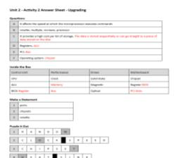

In Unit 2 I had to learn about things such as data storage and the technology that goes into computer like CPU, GPU, adaptors, ect. We also learnt about data protection and encryption which was incredibly interesting to learn about. All in preperation to take a test to get my grade for the unit.
This wasn't my favourite unit and i struggled gaining interest in it but in the end i thuroughly enjoyed the unit and I was able to confidently able to take the test and passed it.